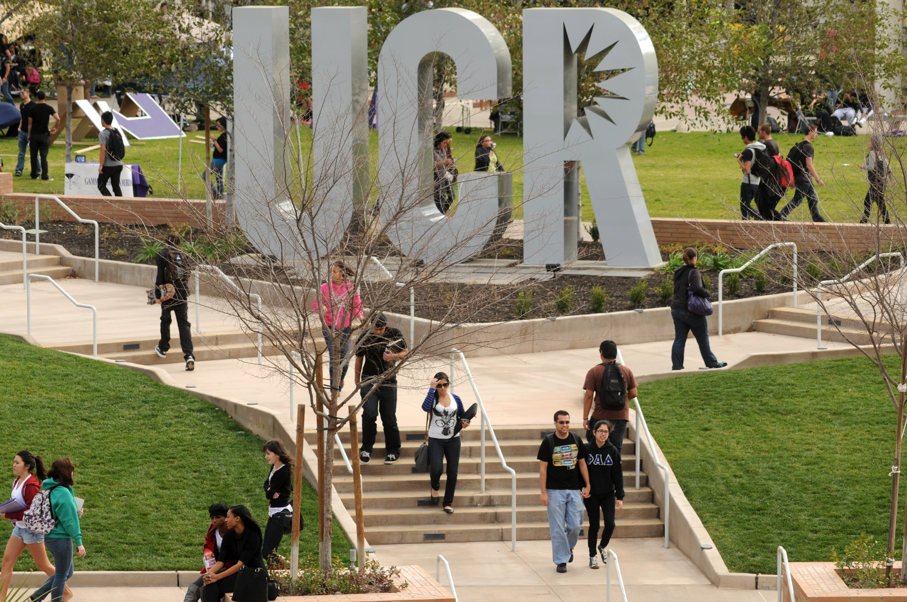
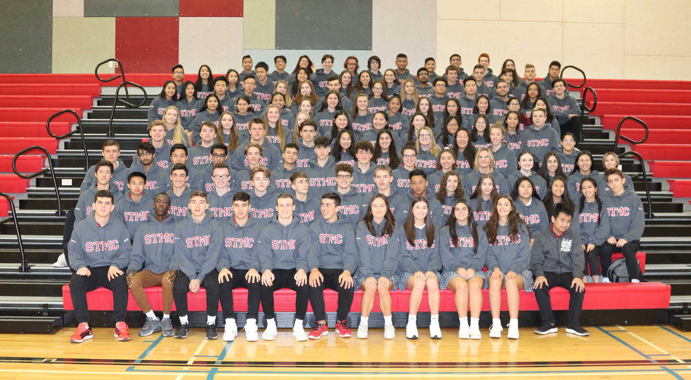
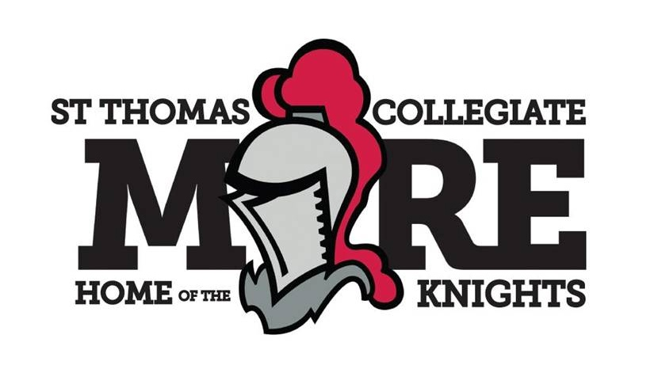
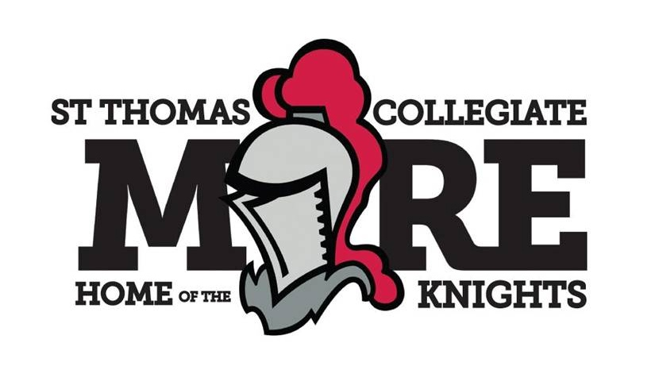
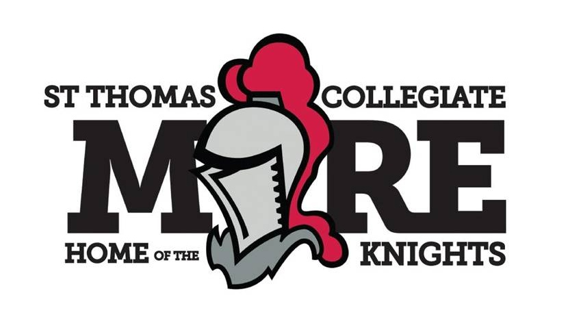

Shiloh Corrales Nelson
Hello! My name is Shiloh Corrales Nelson and I am a second year student athlete at University of California, Riverside. I was born and raised in Burnaby, BC, Canada and got an athletic scholarship to go to university at UCR. Although I have only been a student here for two years I have gained an abundance of knowledge and am greatful to have the oppurtunity to learn and live in a different country.
My first job was as an assistant and receptionist at EMC Immagration Services, Notary Public Office back in Burnaby, BC, Canada. A usual day doing this job was to make buisness deposits at multiple banks for the company as well as handled mailing documents. I have had other work and volunteer experience besides the position I had previously mentioned. Becuase I was a student athelete my whole life my spare time have been limited which also impacted the amount of work and volunteer experience I have, but through sports I have learned and gained discipline, time management skills, communication, and a great work ethic
Although this was not a job every summer of highschool for a whole 4 weeks I would volunteer with my schools Chinese exchange student program. As a counsellor my responsibilities were to help the students learn day to day english language as well as assist them in their first hand Canadian experience. At times it was frustrating not being able to communicate with some of the students but after time it became very fun to help others learn and to learn some Mandarin myself
My hobbies include working out, watching TV, cooking, reading, and eating. Often times I will end my day with binging whatever show I am wathcing then reading a couple chapters of whichever novel I am reading. I find that it is critical to maintain ones hobbies even during the school quarter! Currently I am learning to cook more elabrote dishes since I have finally moved out of the UCR dorms and will no longer have to eat cafeteria food.
I am very passionate about travelling and getting to experience different cultures. My next big work experience I will be enduring is coming up in the summer of 2021. During the upcoming summer I am planning to intern at an elementary school in Seoul, South Korea teaching the children English as a second language. I am extremely excited for my 8 week internship as not only will I be doing the things I love (travelling and teaching), I will also be blessed with this amazing once in a life time oppurtunity to fully emerse myself into a different environment
Although I lack experience in the American workforce I am very knowledgeable and skilled at working with people from other cultures and ethnicities! I am well travelled and am able to adapt to new environments wether they are a new work place, city, country, or culture.
Experience
Inventory Clerk
• Organize and categorize products in themes, groups, and coordinates
• Provide ideas with gift themes and items
• Assist in packaging, wrapping, and distribution
Assistant and Receptionist
• Answer telephone calles and take detailed messages
• File correspondence and accounting documents
• Gather information about the clients and input information in the file system
International Exchange Mentor
• Teach exchange students everyday english language
• Acted as a guide for different excursions around British Colombia Canada
• Marked english tests and quizzes
Education
Saint Thomas More Colleigiate
University of California Riverside
Portfolio


 

